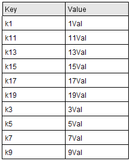
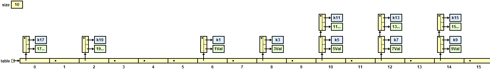
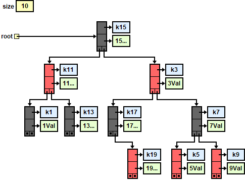

Lesson G4: Maps#
Introduction#
A Map is an interface that offers a data structure that acts a lot like an array except that the indices do not have to be integers.
Let’s say that you want to the ability to look up the age of individuals using their unique name. One way to solve this with arrays is to have two parallel arrays as follows:
int[] ages = { 15, 18, 3, 4 };
String[] names = { "Rishitha", "Zainab", "Prithu", "George" };
// look up the age of `name`
for (int i = 0; i < names.length; i++) {
if (names[i].equals(name)) {
System.out.printf("Age is %d\n", ages[i]);
}
}
The above code take O(n) time to sequentially search the array. It is slow and long.
Wouldn’t it be great if we could have a fast and “special” array where the index was the name? Then, to look up the age we’d greatly simply the code to be:
// Code to create special "array" is not shown
SpecialArray[] special = ... ;
// Look up the age of `name`
System.out.printf("Age is %d\n", special[name]);
The above code takes O(1) and has no loops! Maps allow us to accomplish the same thing, but we need to use generics syntax and use APIs for indexing. Furthermore, just like with ArrayList, we are restricted to Object types. Here is how the Map code would look:
// Create a map where the Index (or Key) is a String
// and the Value is an Integer.
Map<String, Integer> map = new HashMap<>();
map.put("Rishitha", 15); // special["Rishitha"] = 15
map.put("Zainab", 18); // special["Zainab"] = 18
map.put("Prithu", 3); // special["Prithu"] = 3
map.put("George", 4); // special["George"] = 4
// Look up the age of `name`
System.out.printf("Age is %d\n", map.get(name));
Working with Maps#
A map holds a set of unique keys and a collection of values, where each key is associated with one value. The basic map operations are:
put(key, value): Adds a mapping from a key to a value.get(key): Retrieves the value mapped to the key.remove(key): Removes the given key and its mapped value.

Iterating a Map#
We iterate through the Set of Keys.
for (String word : map.keySet()) {
System.out.printf("%10s: %2d\n", word, map.get(word));
}
Or, we get the Entry Set and iterate through that:
for (Map.Entry<String, Integer> entry : map.entrySet()) {
System.out.printf("%10s: %2d\n", entry.getKey(), entry.getValue());
}
Order is unknown in a HashSet.
Concrete Maps#
Here we will look at the two most popular implementations for a Map. In this example, we will have the following Key/Values.

HashMap#
The Keys and Values are stored in a node in a Hash Table. It is beyond the scope of this lesson to discuss Hashing.

What we hope to illustrate here is that because a HashMap uses a hash table to store its nodes, we get the following characteristics:
Getting, Adding and Removing a key/value is O(1)
There is no predictable enumeration order to the keys in a
HashMap.
TreeMap#
The Keys and Values are stored in a node in a Binary Search Tree. (Balanced using Red-Black Tree algorithms)

Because the nodes are stored in a Binary Search Tree, we get the following characteristics:
Getting, Adding and Removing a key/value is O(ln N)
The keys can be enumerated in a predictable, sorted order.
LinkedHashMap#
A LinkedHashMap is a special type of HashMap that remembers the order in which entries were inserted. Internally, it works just like a regular hash table, but each entry is also part of a doubly linked list that maintains an ordering of the keys.
Here is an illustration of what a LinkedHashMap looks like. It is a HashTable with links between the nodes.

How It Differs from HashMap
Feature |
|
|
|---|---|---|
Ordering |
No guaranteed order |
Predictable order |
Type of order |
None (effectively random) |
Insertion order by default |
Under-the-hood |
Hash table |
Hash table + linked list |
Because of this linked list, when you iterate over a LinkedHashMap, you will see the keys in the exact order they were added. A regular HashMap makes no such promise.
Map<String, Integer> map = new LinkedHashMap<>();
map.put("Rishitha", 15);
map.put("Zainab", 18);
map.put("Prithu", 3);
map.put("George", 4);
// Iteration will print keys in this order:
// Rishitha, Zainab, Prithu, George
for (String name : map.keySet()) {
System.out.println(name + ": " + map.get(name));
}
Performance Impact#
A LinkedHashMap has the same Big-O performance characteristics as a normal HashMap. It is still O(1) for put(), get(), and remove(). However, in practice it is slightly slower and uses a bit more memory because it must maintain an internal linked list of all entries. This means that each entry stores extra pointers for next and prev.
In practice, the difference is small enough that you should choose LinkedHashMap whenever you need predictable iteration order.
Key Requirements#
There are some requirements for the Objects that act as keys in a Map. The requirements are not enforced so if a developer doesn’t follow them then the behavior can get wild!
Immutability#
Keys should ideally be immutable. This ensures that the hash code and equality do not change while the key is in the map. If the key changes, and the hash code changes, then the HashMap will have problem when doing a lookup. This immutability must last over the lifetime of the map unless the key is removed and reinserted.
Equals and hashCode are Consistent#
The two methods, equals and hashCode, need to be proper and consistent with each other. If two keys are considered equal via equals(), they must return the same hashCode().
Sortable#
When using a TreeMap<K, V>, the keys must either:
Implement the
Comparable<K>interface, ORBe used with a custom
Comparator<K>provided when theTreeMapis constructed.